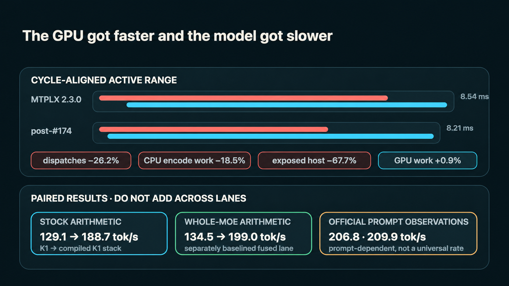
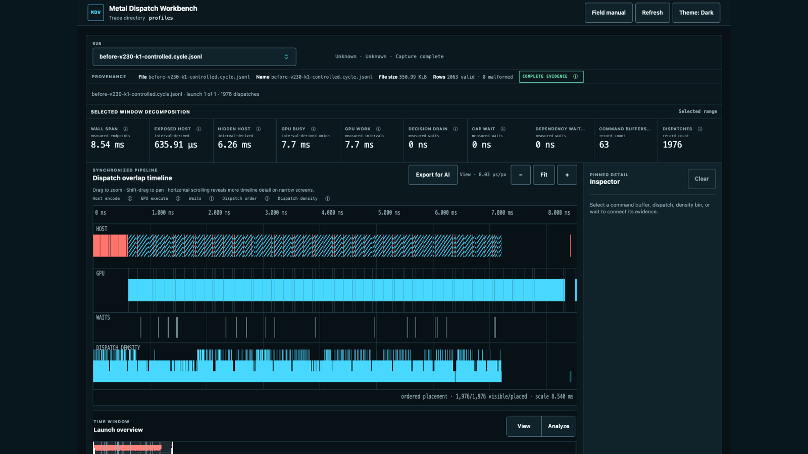
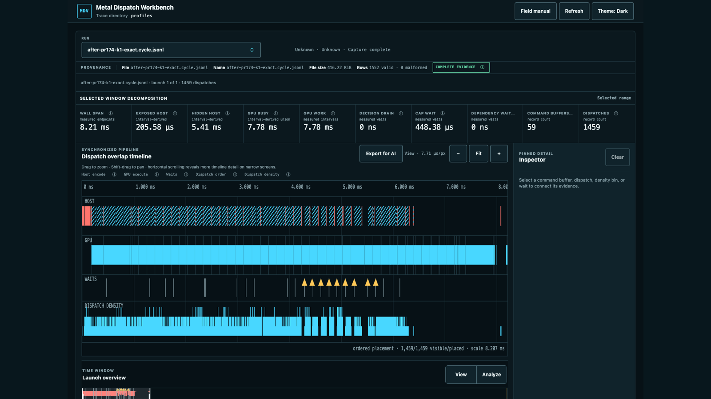

David Tai, OpenSource.WTF
a3b-profiler-performance-ladder-no-section-number.png
I built mlx-profiler after a few “faster” kernels made Qwen3.6-35B-A3B slower.
The kernels really were faster on the GPU. But they also added launches, temporary tensors, and CPU work. The full model lost speed.
Do not optimize the kernel in isolation. Optimize the whole cycle.
Build the instrumented MLX fork by following its quickstart. Then run your normal Python workload with one environment variable:
MLX_DISPATCH_CENSUS="$PWD/baseline.jsonl" \
python your_workload.pyThe profiler records every GPU dispatch, CPU command-buffer encoding, GPU timing, waits, and capture completeness. It does not add a GPU wait just to collect timing.
Run the Metal Dispatch Workbench locally:
git clone https://github.com/OpenSourceWTF/metal-dispatch-viz.git
cd metal-dispatch-viz
npm ci
npm start -- --trace-dir /absolute/path/to/your/tracesOpen http://127.0.0.1:4173/. Your files stay local. If you want to explore first, the public workbench has real example runs.
mlx-profiler-before-v230-k1-cycle-aligned.png
The timeline puts CPU encoding, GPU execution, command buffers, and waits on the same clock.
Drag over one representative cycle and switch to Analyze. The workbench recalculates the numbers for that exact range. Export for AI creates a local Markdown or JSON snapshot without sending anything to a model.
Use the trace to form one small idea: fuse tiny operations, remove an intermediate tensor, reuse existing state, or remove a CPU/GPU round trip. Check correctness, benchmark without the profiler, then recapture with the same model, prompt, seed, and settings.
mlx-profiler-after-pr174-k1-cycle-aligned.png
| One active decode burst | Before | After |
|---|---|---|
| Dispatches | 1,976 | 1,459 |
| Host encode | 6.895 ms | 5.620 ms |
| Exposed host encode | 635.91 µs | 205.58 µs |
| GPU work | 7.70 ms | 7.78 ms |
GPU work went up slightly. The cycle still got faster because the CPU created a much shorter command stream.
Capture. Look for gaps and launch noise. Make one change. Compare the same cycle.
Keep the changes that make the real workload faster.